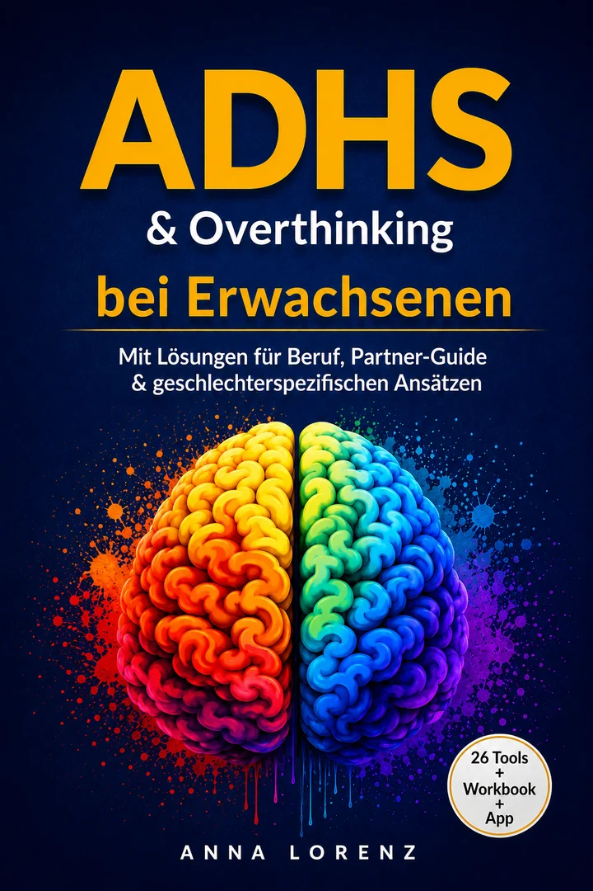

<!doctype html>
<html lang="de">
<head>
<meta charset="utf-8">
<meta name="viewport" content="width=device-width, initial-scale=1, viewport-fit=cover">
<script>/* Zugang nur mit persoenlichem Link aus der Mail (k) oder vorhandenem Fortschritt, 22.11.2026 */
(function(){var ok=false;try{var ls=localStorage,k=new URLSearchParams(location.search).get("k");
if(k&&/^[a-f0-9]{32}$/.test(k)){ls.setItem("adhs-erinnerung-k",k);ls.setItem("adhs-overthinking-reminder-k-typ",k);ok=true}
else if(ls.getItem("adhs-erinnerung-k")||ls.getItem("adhs-overthinking-reminder-k-typ")||ls.getItem("adhs-typ-v1")){ok=true}
else{var s=JSON.parse(ls.getItem("adhs-overthinking-21-v1")||"null");if(s&&(s.startedAt||(s.activeDay||1)>1||Object.keys(s.entries||{}).length||Object.keys(s.supportEntries||{}).length))ok=true}}catch(e){ok=true}
if(ok)return;document.documentElement.className+=" gesperrt";
document.addEventListener("DOMContentLoaded",function(){var d=document.createElement("div");d.id="sperre";d.innerHTML='<div class="sp-in"><div class="sp-t"><p class="sp-k">Zum Buch „ADHS &amp; Overthinking bei Erwachsenen“</p></div><h1>Deine App öffnest du über deinen persönlichen Link.</h1><p>21 Tage, 25 geführte Audios und dein Startplan durch das Buch. Trag deine E-Mail ein, dann kommt dein Link per Mail.</p><a class="sp-b" href="https://munichpublishing.de/Overthinking_ADHS?utm_source=app&utm_medium=sperre&utm_campaign=adhs-typ&utm_content=typ">Zugang anfordern</a><p class="sp-s">Schon angemeldet? Öffne die App über den Knopf in der Mail „Dein Zugang und eine kleine Aufmerksamkeit“.</p></div>';document.body.appendChild(d)})})();</script>
<style>html.gesperrt body>*:not(#sperre){display:none!important}html.gesperrt body{margin:0;background:#07143c}#sperre{min-height:100vh;display:flex;align-items:center;justify-content:center;padding:24px 16px;background:#07143c;color:#fff;font-family:Arial,Helvetica,sans-serif}#sperre .sp-in{width:100%;max-width:460px}#sperre .sp-t{display:flex;gap:12px;align-items:center}#sperre .sp-t img{width:56px;border-radius:6px}#sperre .sp-k{margin:0;color:#ffbf00;font-size:13px;font-weight:700;letter-spacing:.05em;text-transform:uppercase;line-height:1.35}#sperre h1{margin:18px 0 10px;font-size:26px;line-height:1.2;color:#fff}#sperre p{margin:0 0 10px;font-size:17px;line-height:1.5;color:#d6e1ff}#sperre .sp-b{display:block;margin:20px 0 16px;padding:16px;border-radius:12px;background:#ffb000;color:#10182f;text-align:center;font-weight:700;font-size:18px;text-decoration:none}#sperre .sp-s{font-size:14px;color:#9fb0d8}</style>

<meta name="theme-color" content="#07143c">
<meta name="robots" content="noindex">
<title>Dein Overthinking-Typ · Anna Lorenz</title>
<link rel="icon" href="../assets/icon-192.png">
<style>
:root{color-scheme:dark;--bg:#061139;--panel:#0b1d53;--line:rgba(156,182,255,.18);--ink:#f7f9ff;--muted:#aab9df;--gold:#ffba08;--gold2:#ff8a1f;font-family:Inter,ui-sans-serif,system-ui,-apple-system,"Segoe UI",sans-serif}
*{box-sizing:border-box}
body{margin:0;min-height:100vh;background:radial-gradient(circle at 20% 0,#17357d 0,#061139 55%,#02071d 100%);color:var(--ink);line-height:1.5}
main{max-width:640px;margin:0 auto;padding:28px 18px 60px}
.eyebrow{font-size:13px;letter-spacing:.08em;text-transform:uppercase;color:var(--gold);font-weight:700}
h1{font-size:30px;line-height:1.15;margin:8px 0 12px}
h2{font-size:22px;margin:0 0 8px}
p{color:var(--muted);margin:0 0 14px}
.card{background:var(--panel);border:1px solid var(--line);border-radius:20px;padding:20px;margin:16px 0}
.btn{display:inline-flex;align-items:center;justify-content:center;gap:8px;width:100%;min-height:54px;border:0;border-radius:14px;background:linear-gradient(90deg,var(--gold),var(--gold2));color:#1a1000;font-weight:800;font-size:17px;cursor:pointer;text-decoration:none}
.btn--ghost{background:transparent;border:1px solid var(--line);color:var(--ink);font-weight:600}
.bar{height:6px;background:rgba(255,255,255,.1);border-radius:9px;overflow:hidden;margin:6px 0 18px}
.bar i{display:block;height:100%;background:var(--gold);transition:width .25s}
.q{font-size:21px;font-weight:700;color:var(--ink);margin:6px 0 18px;min-height:96px}
.opts{display:grid;gap:10px}
.opt{min-height:52px;border-radius:14px;border:1px solid var(--line);background:rgba(255,255,255,.04);color:var(--ink);font-size:16px;text-align:left;padding:0 16px;cursor:pointer}
.opt:hover,.opt:focus-visible{border-color:var(--gold);outline:none}
.small{font-size:13px;color:#7f92c4}
ol.plan{list-style:none;padding:0;margin:0;counter-reset:p}
ol.plan li{counter-increment:p;display:grid;grid-template-columns:36px 1fr;gap:10px;padding:12px 0;border-top:1px solid var(--line)}
ol.plan li:first-child{border-top:0}
ol.plan li::before{content:counter(p);width:30px;height:30px;border-radius:50%;background:var(--gold);color:#1a1000;font-weight:800;display:grid;place-items:center}
ol.plan b{display:block;color:var(--ink)}
ol.plan span{color:var(--muted);font-size:14px}
.back{background:none;border:0;color:var(--muted);cursor:pointer;padding:8px 0;font-size:14px}
</style>
</head>
<body>
<main id="app" aria-live="polite"></main>
<script>
(function(){
const KEY="adhs-typ-v1";
const DAYS={1:["Stärken-Detektive","9","5–8 Min."],2:["Gib deinem Kritiker einen Namen","12","4 Min."],3:["Die 3-Minuten-Dopamin-Pause","24","3 Min."],4:["5–4–3–2–1: Zurück ins Hier und Jetzt","27","3–5 Min."],5:["Dein persönliches Sensorik-Audit","38","7 Min."],6:["Deine Safe-Space-Box","39","8 Min."],7:["Die Ideen-Schleuse","52","6 Min."],8:["Analoges Mind-Mapping","53","5 Min."],9:["Die Unmasking-Ampel","63","7 Min."],10:["SOS bei RSD","65","4 Min."],11:["Die Time-out-Geste","78","5 Min."],12:["Der Dopamin-Check-in","80","6 Min."],13:["Das System der minimalen Reibung","92","8 Min."],14:["Der sichtbare Blitz-Reset","94","5 Min."],15:["Eat the Frog – ADHS-gerecht","107","3 Min."],16:["Fokus-Sprint und Body Doubling","108","5–10 Min."],17:["Plane nach deiner Energie","121","4 Min."],18:["Dein Energie-Stabilisator","123","5 Min."],19:["Physisch entladen: 2 Minuten","134","2 Min."],20:["Box Breathing","136","2 Min."],21:["Drei Kisten und ein Telefon-Skript","162","10 Min."]};
const TYPES={
 K:{name:"Das Gedanken-Karussell",days:[7,8,4,3,2],text:"Dein Kopf arbeitet weiter, wenn du längst Feierabend hast. Gedanken laufen im Kreis, Entscheidungen werden zu Endlosschleifen. Du brauchst zuerst Platz im Kopf: Gedanken aus dem Kopf aufs Papier und zurück ins Hier und Jetzt."},
 R:{name:"Die Kritik-Antenne",days:[10,2,1,9,11],text:"Dein Kopf ist sehr fein eingestellt auf das, was andere über dich denken könnten. Eine kurze Nachricht oder ein Blick hallt lange nach. Das ist kein Charakterfehler, sondern ein Muster, das dein Buch ab Seite 65 RSD nennt."},
 S:{name:"Der Reiz-Schwamm",days:[5,6,3,4,20],text:"Geräusche, Licht und Menschen kommen bei dir ungefiltert an. Der Kopf wird laut, weil die Umgebung laut ist. Du startest am besten damit, deine Reize zu kennen und einen sicheren Rückzug zu bauen."},
 B:{name:"Die Start-Blockade",days:[15,16,13,14,21],text:"Du weißt, was zu tun ist, und kommst trotzdem nicht rein. Je wichtiger die Aufgabe, desto schwerer der erste Schritt. Du brauchst winzige Einstiege und weniger Reibung, nicht mehr Disziplin."},
 E:{name:"Die Energie-Achterbahn",days:[17,18,19,12,20],text:"Du pendelst zwischen Vollgas, Impuls und Erschöpfung. Das Grübeln kommt oft im Tief. Du startest damit, nach deiner Energie zu planen und Anspannung über den Körper abzubauen."}};
const Q=[["Abends im Bett spiele ich Gespräche vom Tag noch einmal durch.","K"],["Eine Nachricht ohne Antwort beschäftigt mich stundenlang.","R"],["In vollen Räumen oder bei Lärm bin ich schnell erschöpft.","S"],["Ich schiebe Wichtiges auf, obwohl ich es eigentlich erledigen will.","B"],["Ich habe Tage mit Vollgas und danach Tage, an denen nichts geht.","E"],["Ich denke über eine Entscheidung so lange nach, bis ich gar nicht entscheide.","K"],["Schon leise Kritik fühlt sich an, als wäre ich als Person falsch.","R"],["Nach einem Tag mit vielen Menschen brauche ich lange Stille.","S"],["Post, Anrufe und Formulare bleiben bei mir liegen.","B"],["Ich reagiere manchmal schneller, als mir später lieb ist.","E"],["Mein Kopf springt von einem Gedanken zum nächsten, und ich verliere den Faden.","K"],["Ich passe mich an, damit niemand merkt, wie anstrengend es für mich ist.","R"],["Kleidung, Licht oder Geräusche stören mich mehr als andere.","S"],["Wenn ich anfangen soll, fühlt sich alles gleich groß und gleich schwer an.","B"],["Mein Körper ist unruhig, auch wenn ich müde bin.","E"]];
const OPTS=["Trifft nicht zu","Manchmal","Oft","Fast immer"];
const app=document.getElementById("app");
const params=new URLSearchParams(location.search);
let k=params.get("k");
try{ if(k&&/^[a-f0-9]{32}$/.test(k)) localStorage.setItem("adhs-overthinking-reminder-k-typ",k); else k=localStorage.getItem("adhs-overthinking-reminder-k-typ"); }catch(e){}
const appUrl=d=>"../"+(k?"?k="+k:"")+"#day-"+d;
let answers=[];
const esc=s=>String(s).replace(/[&<>"]/g,c=>({"&":"&amp;","<":"&lt;",">":"&gt;",'"':"&quot;"}[c]));
function load(){try{return JSON.parse(localStorage.getItem(KEY))}catch(e){return null}}
function save(r){try{localStorage.setItem(KEY,JSON.stringify(r))}catch(e){}}
function intro(){
 app.innerHTML=`<span class="eyebrow">Exklusiv für Leserinnen des Buchs</span>
 <h1>Nicht jede Übung passt zu deinem Kopf.</h1>
 <p>15 Aussagen, etwa 3 Minuten. Danach kennst du deinen Overthinking-Typ und die 5 Tage aus deinem Buch, mit denen du am besten anfängst, jeweils mit Seitenzahl.</p>
 <div class="card"><p style="margin:0">Antworte aus dem Bauch heraus, so wie es in den letzten Wochen meistens war. Es gibt kein Richtig oder Falsch.</p></div>
 <button class="btn" id="go">Test starten →</button>
 <p class="small" style="margin-top:16px">Das ist keine Diagnose, sondern ein Wegweiser durch dein Buch. Deine Antworten bleiben auf deinem Gerät.</p>`;
 document.getElementById("go").onclick=()=>{answers=[];ask(0)};
}
function ask(i){
 if(i>=Q.length) return finish();
 app.innerHTML=`<span class="eyebrow">Aussage ${i+1} von ${Q.length}</span>
 <div class="bar"><i style="width:${i/Q.length*100}%"></i></div>
 <div class="q">${esc(Q[i][0])}</div>
 <div class="opts">${OPTS.map((o,v)=>`<button class="opt" data-v="${v}">${o}</button>`).join("")}</div>
 ${i>0?'<button class="back" id="back">← Zurück</button>':""}`;
 app.querySelectorAll(".opt").forEach(b=>b.onclick=()=>{answers[i]=+b.dataset.v;ask(i+1)});
 const bk=document.getElementById("back"); if(bk) bk.onclick=()=>ask(i-1);
 app.querySelector(".opt").focus({preventScroll:true});
}
function finish(){
 const sc={K:0,R:0,S:0,B:0,E:0};
 Q.forEach((q,i)=>sc[q[1]]+=answers[i]||0);
 const order=Object.keys(sc).sort((a,b)=>sc[b]-sc[a]||"RBKSE".indexOf(a)-"RBKSE".indexOf(b));
 const p=order[0],s=order[1];
 const plan=TYPES[p].days.slice(0,4);
 for(const d of TYPES[s].days){ if(!plan.includes(d)){plan.push(d);break;} }
 const r={primary:p,secondary:s,mixed:sc[p]===sc[s],scores:sc,plan,at:new Date().toISOString()};
 save(r); result(r);
}
function result(r){
 const t=TYPES[r.primary],t2=TYPES[r.secondary];
 app.innerHTML=`<span class="eyebrow">Dein Overthinking-Typ</span>
 <h1>${t.name}</h1>
 ${r.mixed?`<p><b style="color:var(--ink)">Mischtyp:</b> ${t2.name} ist bei dir genauso stark. Dein Plan nimmt beide mit.</p>`:""}
 <p>${t.text}</p>
 <div class="card"><h2>Dein Plan: diese 5 Tage zuerst</h2>
 <ol class="plan">${r.plan.map((d,i)=>`<li><div><b>Tag ${d} · ${esc(DAYS[d][0])}</b><span>Buch S. ${DAYS[d][1]} · ${DAYS[d][2]}${i===4?" · aus deinem Zweittyp: "+t2.name:""}</span></div></li>`).join("")}</ol></div>
 <a class="btn" href="${appUrl(r.plan[0])}">Tag ${r.plan[0]} jetzt starten →</a>
 <p class="small" style="margin-top:14px">Danach geht es mit allen 21 Tagen in der Reihenfolge des Buchs weiter, wann immer du willst. Tipp: Schreib dir die 5 Tage vorn ins Buch.</p>
 <button class="btn btn--ghost" id="again" style="margin-top:10px">Test wiederholen</button>
 <p class="small" style="margin-top:16px">Das ist keine Diagnose, sondern ein Wegweiser durch dein Buch.</p>`;
 document.getElementById("again").onclick=()=>{answers=[];ask(0)};
}
const prev=load();
if(prev&&TYPES[prev.primary]&&!params.has("neu")) result(prev); else intro();
})();
</script>
</body>
</html>
